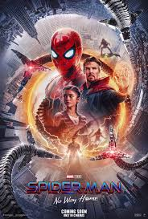
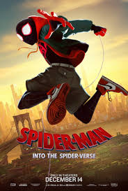
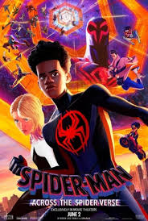
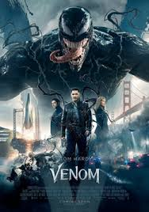
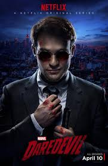

TU AMIGO Y VECINO: SPIDERMAN
Sigue a Peter Parker en su camino para convertirse en Spider-Man,
con un viaje como nunca antes habíamos visto y un estilo que celebra
las primeras raíces del personaje en los cómics.
- Género: Animación, Acción, Aventura, Comedia, Drama, Fantasía y Ciencia ficción
- Año: 2025
- Duración:1 temporada
- Director: Melchior Zwyer, Liza Singer y Stu Livingston
- Productores/as: Danielle Costa y Tim Pauer
- Calificación general: 7.5/10
- Clasificación por edad: +10
- Plataformas: Disney+
Tráiler
REPARTO
HUDSON THAMES
CHARLIE COX
GRACE SONG
COLMAN DOMINGO
ZENO ROBINSON
RESEÑAS DESTACADAS
Calificación: 9.0 / 10
ComicLover92 dice:
Una adaptación fiel y emocionante.
"Spiderman logra capturar la esencia del héroe de barrio que todos amamos.
La mezcla de acción, humor y humanidad hace que la película se sienta cercana.
Las escenas de balanceo por Nueva York son espectaculares y la relación con los
personajes secundarios está muy bien construida. Sin duda, una de las mejores
entregas del arácnido."
Calificación: 7.0 / 10
MovieCritic21 dice:
Entretenida, pero con clichés.
"La película es divertida y tiene escenas memorables, pero cae en algunos
clichés típicos de superhéroes. El villano principal no tiene tanta fuerza
como esperaba y algunas partes del guion se sienten predecibles. Aun así,
Tom Holland transmite muy bien la dualidad de Peter Parker y Spiderman."
Calificación: 8.0 / 10
NYCfan dice:
Spiderman vuelve a ser el héroe del pueblo.
"Lo que más me gustó fue cómo la película muestra a Spiderman como un héroe
cercano, preocupado por su comunidad y sus amigos. Las escenas en Queens
transmiten esa sensación de vecindad que lo diferencia de otros superhéroes.
La acción es sólida y el humor está bien equilibrado."
Calificación: 7.5 / 10
CineGeek dice:
Gran acción, pero ritmo irregular.
"Las escenas de acción son espectaculares, especialmente las persecuciones
aéreas y los combates con el villano. Sin embargo, el ritmo de la película
decae en el segundo acto y algunas subtramas no aportan demasiado. Aun así,
el final compensa con un clímax emocionante."
Calificación: 6.5 / 10
MarvelFan dice:
Spiderman brilla, pero no tanto la historia.
"El carisma de Spiderman sostiene la película, pero la trama principal
se siente algo floja y repetitiva. Los efectos visuales son muy buenos
y la música acompaña bien, pero esperaba un guion más sólido. Aun así,
es una entrega disfrutable para los fans."
RELACIONADOS

SPIDERMAN: NO WAY HOME
Calificación: 8.3/10
DURACION: 2h 28min

SPIDERMAN: INTO THE SPIDER-VERSE
Calificación: 8.4/10
DURACION: 1h 57min

SPIDERMAN: ACROSS THE SPIDER-VERSE
Calificación: 8.6/10
DURACION: 2h 20min

VENOM
Calificación: 6.7/10
DURACION: 1h 52min
